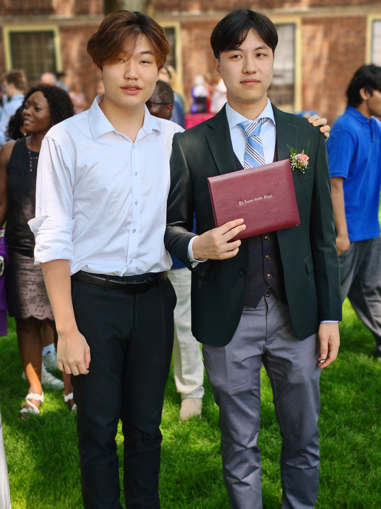

Founder · Builder · Student
It starts with
a little curiosity.
I’m Louis. I grew up in Hong Kong, started building displays as a teenager, and now explore what’s possible where hardware, AI, and entrepreneurship meet.
A little more about me ↗
From Hong Kong to BostonBabson ’28 · Learning at OlinHardware + AI + Entrepreneurship
01 / A work in progress
Learning by
making it real.
My path into entrepreneurship started with a screen. Eazeye grew from exploring a different way to use light in displays. That experience led me deeper into product development—and into the many things it takes to bring an idea into the world.
Today, I’m studying at Babson, taking classes at Olin, and building Eazeye and LaunchMaxx along the way.
02 / Selected work
Ideas off the page.

03 / Say hello
Good things start
with a conversation.
Working on something interesting, curious about a project, or just want to compare ideas? I’d love to hear from you.
Get in touch ↗